After tooth loss in the upper molar/premolar region, the sinus can extend downward and the jawbone can shrink. The implant then needs additional bone below the sinus floor.
For moderate bone shortage, the sinus floor is lifted through the implant drilling channel. This is usually less invasive.
For larger defects, a small lateral bone window is created. The sinus membrane is lifted under direct control and bone material is placed.
After the procedure, do not blow your nose, avoid pressure equalisation and sneeze with an open mouth. Flying and diving may need to be avoided temporarily.
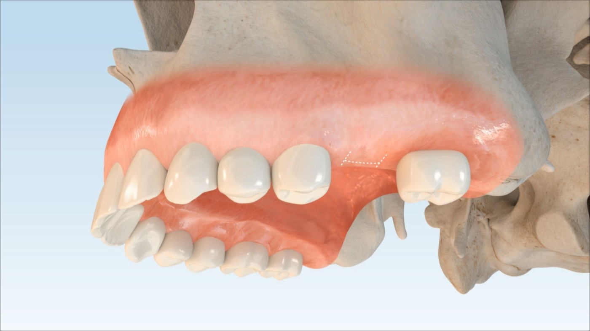
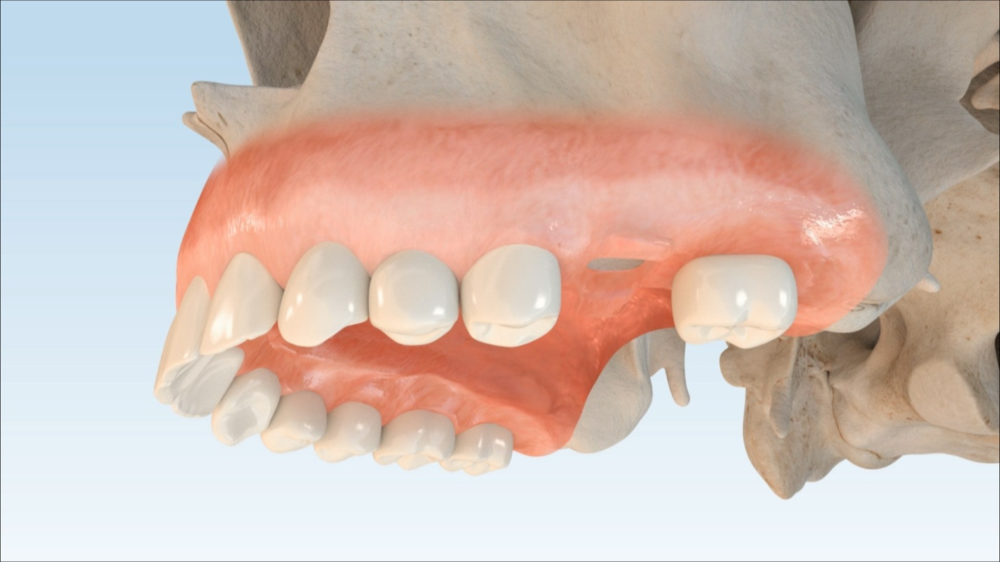
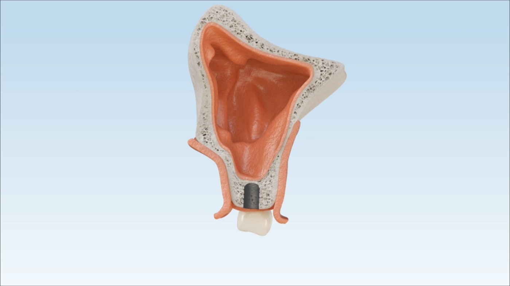
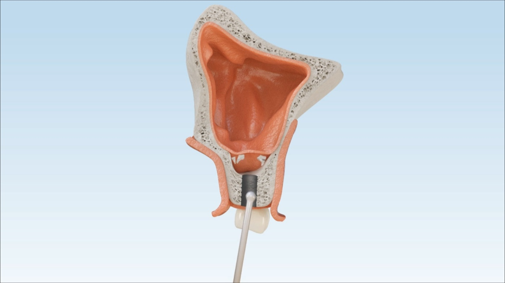
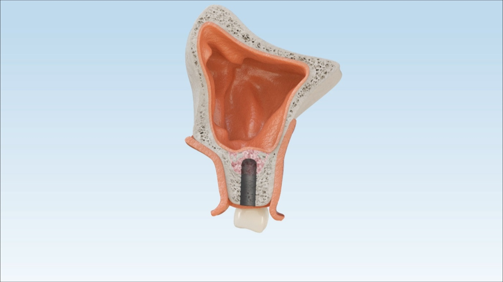
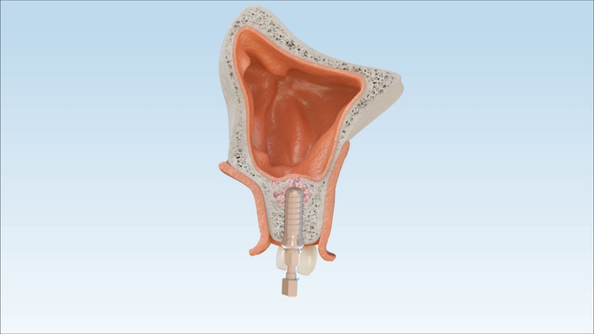
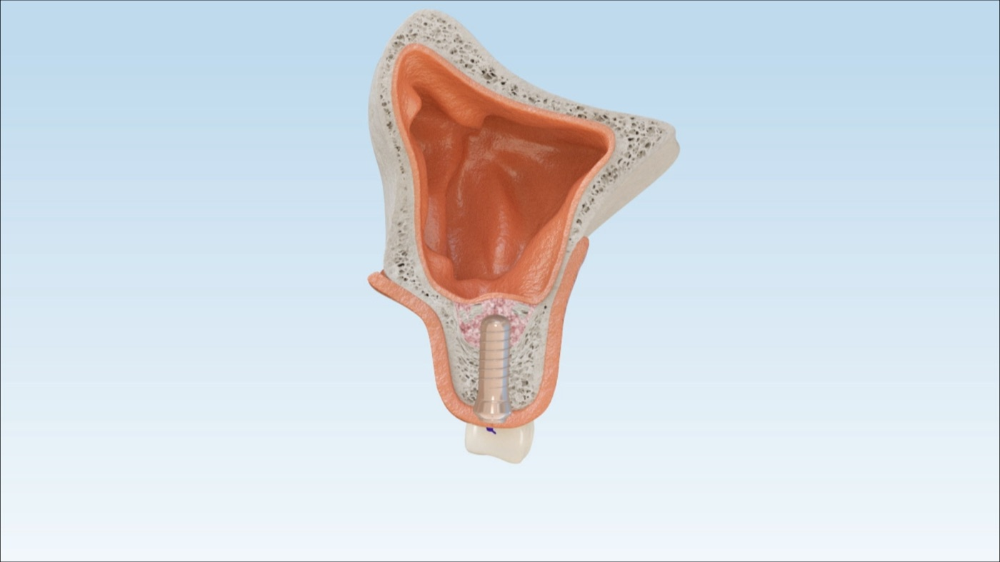
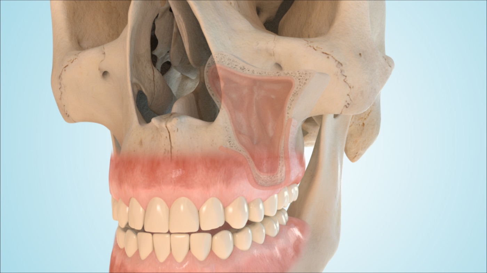
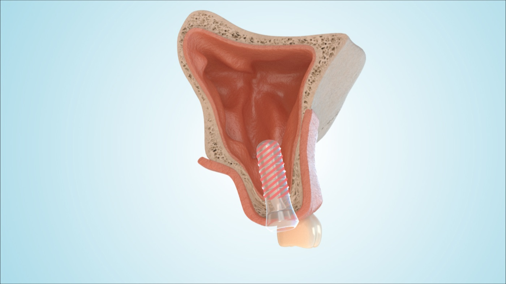
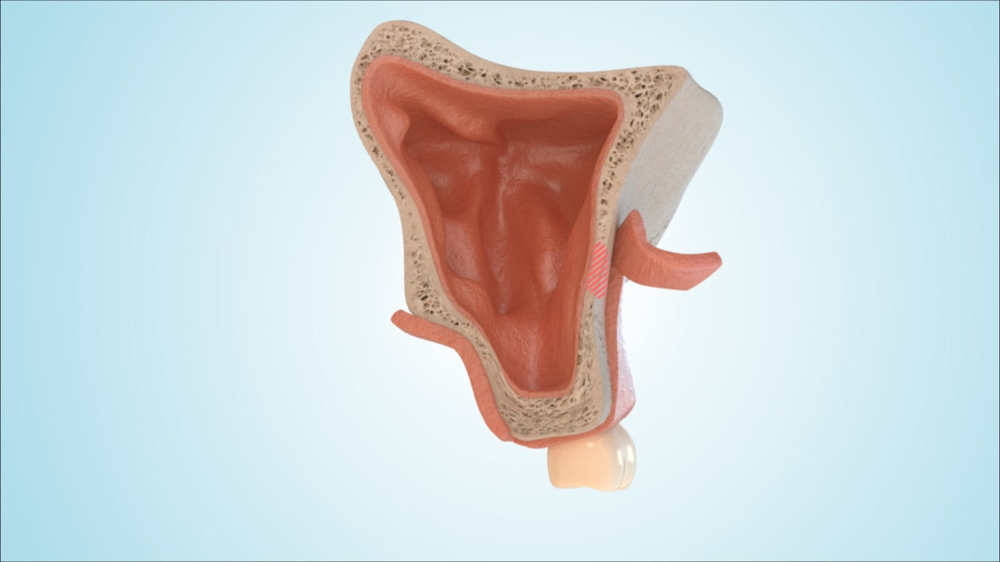
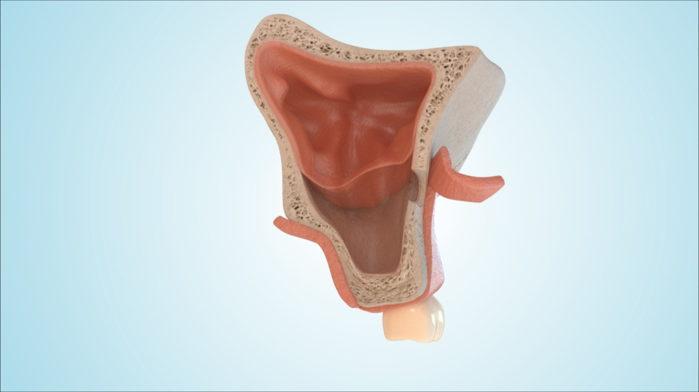
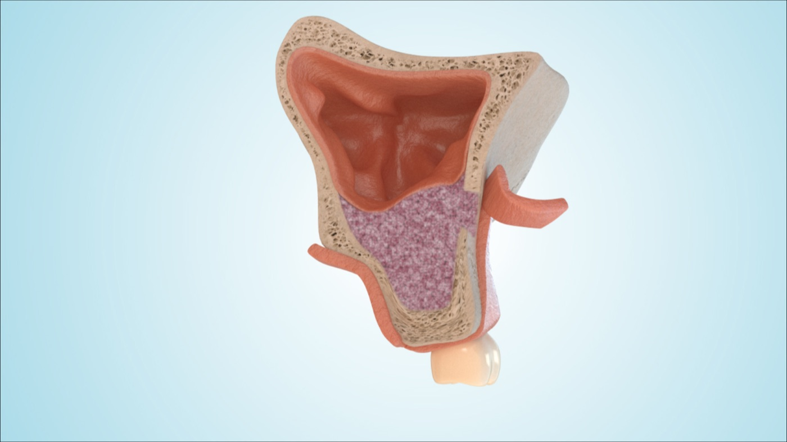
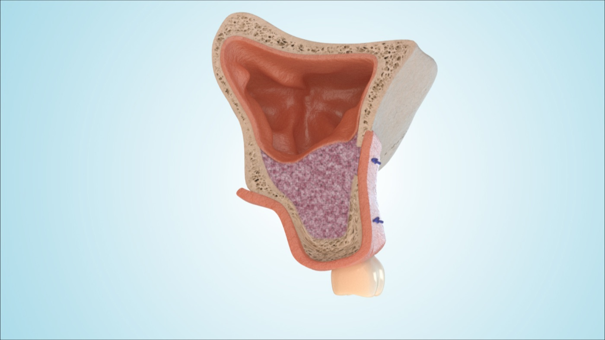
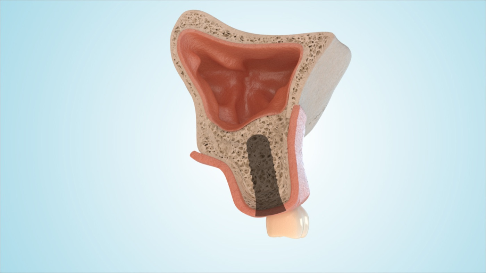
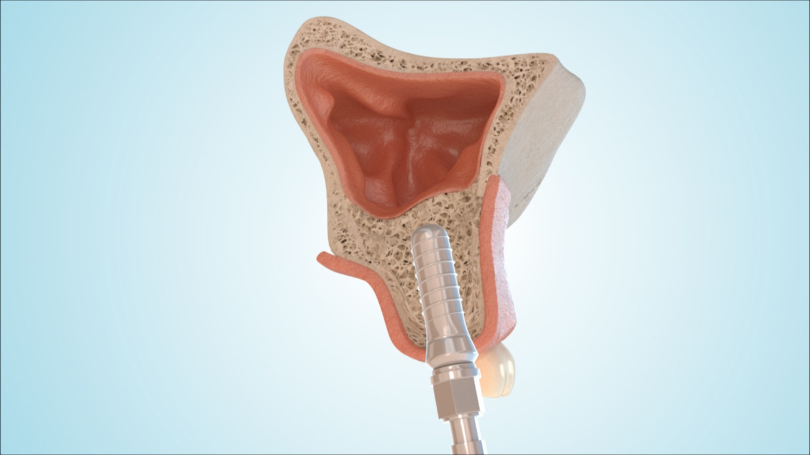
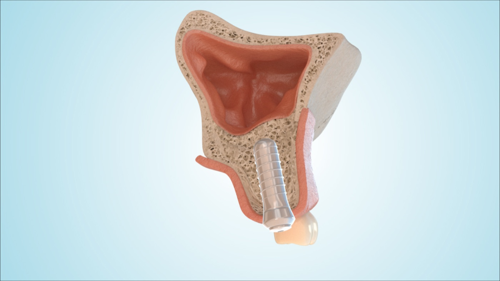
Imaging and decision between internal and external sinus lift.
Sinus membrane is lifted and bone material is placed.
Several months depending on the extent.
Placed simultaneously or later, depending on primary stability and bone height.
After implant healing and clearance.
| Risk | What it means |
|---|---|
| Sinus membrane perforation | Usually manageable, but may require plan change or healing time. |
| Mouth-antrum connection | A connection to the sinus can occur and is closed if detected. |
| Sinusitis | Sinus infection or congestion can require medication and controls. |
| Graft infection / loss | Rare, but can compromise the augmentation. |
| Implant loss | If healing or stability is insufficient. |
| Method | Description | Cost |
|---|---|---|
| Local anaesthesia (standard) | You are awake. You should not feel pain, only pressure. If you notice pain, we immediately add more anaesthetic. Public transport home is allowed after local anaesthesia. | Covered by statutory insurance or included in the treatment package. |
| Oral sedation with Tavor (comfort option) | Tablet about 60 minutes before treatment. This does not put you to sleep, but markedly reduces stress. Vital signs are monitored. An accompanying person is required and you must not drive or make important decisions for 24 hours. Pick-up from the practice is mandatory. | Approx. EUR 80, private service. |
| IV sedation / twilight sedation (comfort option) | Professional anaesthesia team, medication at the border between sleep and wakefulness, usually little or no memory. Recovery room with vital sign monitoring afterwards. Usually only on Tuesdays. Fasting rules apply. | Approx. EUR 230, private service where available. |
| General anaesthesia (comfort option) | True deep sleep with ventilation through the nose into the lungs. No awareness of the procedure. Recovery room with monitoring afterwards. Usually only on Tuesdays. Fasting rules apply. Pick-up from the practice is mandatory. | Approx. EUR 450 or more depending on treatment time and effort. |
| Medication | Use | Note |
|---|---|---|
| Ibuprofen 600 | Every 6-8 hours, max. 3 times per day. | Do not take on an empty stomach. |
| Paracetamol 500-1000 | Alternative or additional option every 6 hours. | Maximum 4 g/day. |
| Novalgin drops | Up to 4 x 30 drops per day. | For stronger pain, if prescribed/suitable. |
| No aspirin/ASA | Avoid completely unless medically required. | Increases the risk of postoperative bleeding. |
No. It is needed only when bone height below the sinus is insufficient.
Sometimes, if primary stability is sufficient.
Usually at least two weeks; exact instructions depend on the procedure.